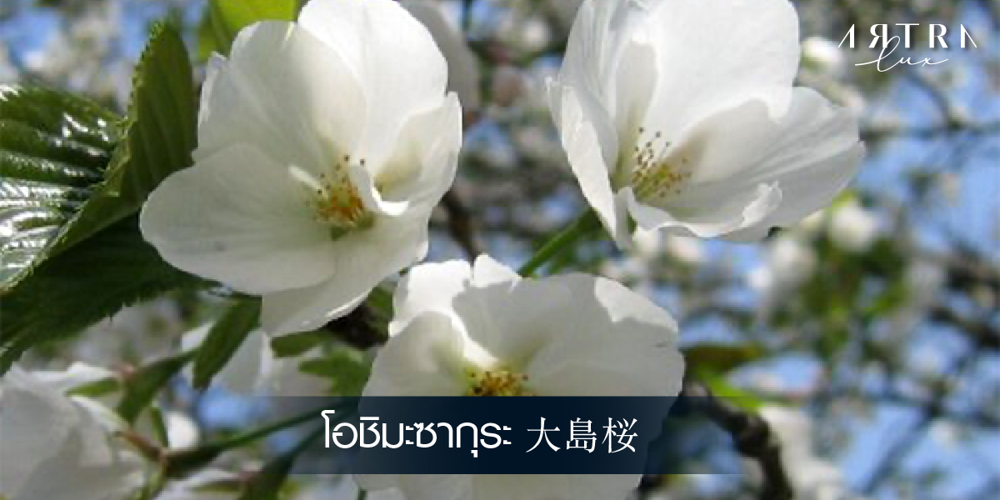

「桜花らんまんの美しい時節」
ฤดูดอกไม้ซากุระที่สวยงาม


❮
❯
About
ซากูระ (ญี่ปุ่น: 桜, 櫻) เป็นชื่อสามัญของพืชหลายชนิดจำพวกเชอร์รีในสกุล Prunus อาทิ P. jamasakura, P. serrulata เป็นต้น มีถิ่นกำเนิดในจีนตอนใต้, เกาะไต้หวัน, หมู่เกาะโอกินาวะ และหมู่เกาะญี่ปุ่น มีดอกสีขาว กลีบแต่ละกลีบมีจำนวนแตกต่างกันไปตามชนิด ลักษณะเด่นของซากูระก็คือ เมื่อร่วง จะร่วงพร้อมกันหมด ซากูระจึงเป็นสัญลักษณ์ของความเป็นทหารและวิถีความเป็นบูชิโดของญี่ปุ่น
My Name
คำว่า "ซากูระ" ในภาษาญี่ปุ่นนั้นเชื่อกันว่ากร่อนมาจากคำว่า "ซากูยะ" (咲耶; หมายถึง ผลิบาน) อันเป็นชื่อของเทพธิดา "โคโนฮานาซากูยาฮิเม" (木花之開耶姫) ในเทพปกรณัมของญี่ปุ่น มีศาลบูชาของพระองค์อยู่บนยอดเขาฟูจิด้วย สำหรับพระนามของเทพธิดาองค์ดังกล่าวนั้น มีความหมายว่า "เจ้าหญิงดอกไม้บาน" และเนื่องจากซากูระเป็นดอกไม้ที่นิยมกันมากในญี่ปุ่นสมัยนั้น คำว่าดอกไม้ดังกล่าวจึงหมายถึงดอกซากูระนั่นเอง เทพธิดาองค์ดังกล่าวได้รับพระนามเช่นนั้น ก็เพราะมีเรื่องเล่ามาว่าทรงตกจากสวรรค์มาบนต้นซากูระ ดังนั้น ดอกซากูระจึงถือเป็นตัวแทนของดอกไม้ญี่ปุ่น ขณะที่รัฐบาลญี่ปุ่นประกาศให้ดอกเก๊กฮวย (ดอกเบญจมาศ) เป็นดอกไม้ประจำชาติ
ซากุระมีสายพันธุ์กี่ชนิด และกี่สีกันแน่นะ?
รู้หรือไม่ ดอกซากุระ แท้จริงมีกลิ่นอ่อนจางจนแทบไม่รู้สึก หากต้องการดมกลิ่นชัดๆ ของมันจะต้องนำน้ำร้อนไปราดใส่ ดอกซากุระดอง จึงจะได้กลิ่นหอมหวานบางเบาลอยขึ้นมา ซากุระ เป็นดอกไม้ที่มีมากกว่า 300 สายพันธุ์ทั่วโลก มีหลายสีทั้งชมพู, ขาว, เหลือง และม่วง ลักษณะของดอกจะมีตั้งแต่ ห้ากลีบ ไปจนถึงหลายกลีบทับซ้อนกัน ตามแต่ละสายพันธุ์ ในยุคเริ่มต้นสายพันธุ์ที่นิยมใน ประเทศญี่ปุ่น คือ Higan Sakura ซึ่งมีสีแดง ต่อมาได้มีการพัฒนาสายพันธุ์ขึ้นมาใหม่เป็นสีชมพูอ่อน และกลายเป็นสีที่ได้รับความนิยมมากที่สุดจนถึงปัจจุบัน สีสันของ ดอกซากุระ ยังแฝงความหมายไว้อีกด้วยนะ
ดอกซากุระสีชมพู เป็นสัญลักษณ์ของความรัก ความโรแมนติก
ความอ่อนโยนและอ่อนหวาน
ดอกซากุระสีขาว แทนความบริสุทธิ์ ไร้เดียงสา จิตวิญญาณ และความศักดิ์สิทธิ์
ดอกซากุระสีเหลือง สื่อให้รู้สึกถึงความสุข มิตรภาพและความผูกพัน
ดอกซากุระสีม่วง ให้ความรู้สึกถึงความสง่างาม เป็นตัวแทนของชนชั้นสูง
